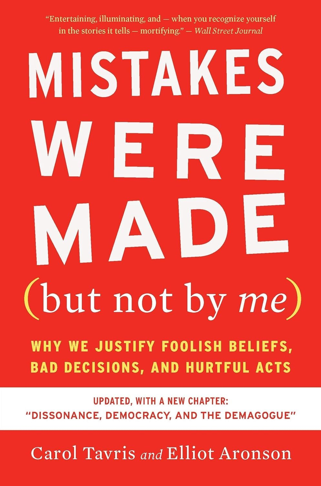

"Mistakes were made."（错误发生了。）这是美国政客道歉时最爱用的句式——被动语态，没有主语，错误仿佛是自己冒出来的，与说话人无关。水门事件时期，尼克松的新闻秘书罗恩·齐格勒用过它；里根在伊朗门事件中用过；小布什的政府也用过。专栏作家威廉·萨菲尔把它定义为"一种以被动、回避的方式承认错误、同时与责任撇清关系"的说法，政治学者威廉·施耐德干脆戏称这是英语里的"过去免责时态"（past exonerative tense）。社会心理学家卡罗尔·塔夫里斯（Carol Tavris）与艾略特·阿伦森（Elliot Aronson）把这句话借来做书名，2007年由 Harcourt 出版，副标题点明了全书要追问的问题：我们为什么替愚蠢的信念、糟糕的决定和伤人的行为辩解。
两位作者都不是外行。阿伦森是认知失调理论创始人利昂·费斯廷格（Leon Festinger）的博士生，发明过用来化解校园族群对立的"拼图课堂"（jigsaw classroom）教学法，是美国心理学会百余年历史上唯一一位同时拿下写作（1973）、教学（1980）与研究（1999）三项最高奖的人，也是经典教材《社会性动物》的作者。塔夫里斯拥有密歇根大学社会心理学博士学位，写过《对女性的误测》（The Mismeasure of Woman）。全书的引擎是费斯廷格的认知失调：当"我是个聪明、正派的人"与"我做了件蠢事或坏事"这两个念头同时存在时，人会感到不适，而消解不适最省力的办法，不是承认错误，而是说服自己那个决定其实没错。他们用"选择金字塔"来描摹这个过程：两个态度原本相近的人站在金字塔顶端，各自做出一个微小的决定，随后为它辩护，每一次辩护都把人往塔的一侧下方推一格，等滑到塔底，两人已站在相隔最远的两角，都确信对方荒谬——差异不是起点，而是层层自我辩护的产物。
书中的案例大多来自现实的高风险场合。检察官在 DNA 证据面前仍拒绝承认冤案、坚称清白者有罪，因为承认错误意味着否定自己多年的职业判断；里德讯问法（Reid technique）如何诱出无辜者的虚假供述；1980至90年代"恢复记忆"治疗与"撒旦仪式虐待"恐慌怎样制造出根本不曾发生的童年受虐记忆；夫妻如何在一次次自我辩护中把小摩擦累积成离婚；小布什政府在没找到大规模杀伤性武器后如何重新叙述开战理由。2020年的第三版又补写了一章《失调、民主与煽动者》（Dissonance, Democracy, and the Demagogue），把这套机制推向政治极化的当下。
《华尔街日报》的评价被印在封面上："Entertaining, illuminating, and — when you recognize yourself in the stories it tells — mortifying."（有趣、有启发，而当你在书里的故事中认出自己时，令人无地自容。）这句话点出了本书真正的不适感：它讲的不是别人怎么骗别人，而是我们怎么骗自己。对做投资和管理决策的人，它的用处很具体——真正危险的往往不是那个错误的决定本身，而是决定做出之后启动的自我辩护：为了让"我没错"成立，人会选择性地看数据、加倍下注、把沉没成本当作继续的理由。塔夫里斯与阿伦森没有开出简单药方，只提出一个朴素的分辨：把"我犯了个错误"和"我是个坏人"拆开——承认前者，才不必用一连串新的错误去保卫那个完美的自我形象。